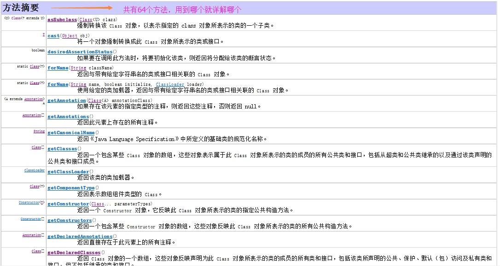

原文连接:https://www.cnblogs.com/java-friend/p/11549038.html
反射是框架设计的灵魂
（使用的前提条件：必须先得到代表的字节码的 Class，Class 类用于表示. class 文件（字节码））
一、反射的概述
JAVA 反射机制是在运行状态中，对于任意一个类，都能够知道这个类的所有属性和方法；对于任意一个对象，都能够调用它的任意一个方法和属性；这种动态获取的信息以及动态调用对象的方法的功能称为 java 语言的反射机制。
要想解剖一个类, 必须先要获取到该类的字节码文件对象。而解剖使用的就是 Class 类中的方法. 所以先要获取到每一个字节码文件对应的 Class 类型的对象.
以上的总结就是什么是反射
反射就是把 java 类中的各种成分映射成一个个的 Java 对象
例如：一个类有：成员变量、方法、构造方法、包等等信息，利用反射技术可以对一个类进行解剖，把个个组成部分映射成一个个对象。
（其实：一个类中这些成员方法、构造方法、在加入类中都有一个类来描述）
如图是类的正常加载过程：反射的原理在与 class 对象。
熟悉一下加载的时候：Class 对象的由来是将 class 文件读入内存，并为之创建一个 Class 对象。
其中这个 Class 对象很特殊。我们先了解一下这个 Class 类
关注公众号：「Java 知己」，发送「Group」，加入 Java 知己微信群。与 10 万程序员一起进步。每天更新 Java 知识哦，期待你的到来！
二、查看 Class 类在 java 中的 api 详解（1.7 的 API）
如何阅读 java 中的 api 详见 java 基础之——String 字符串处理
Class 类的实例表示正在运行的 Java 应用程序中的类和接口。也就是 jvm 中有 N 多的实例每个类都有该 Class 对象。（包括基本数据类型）
Class 没有公共构造方法。Class 对象是在加载类时由 Java 虚拟机以及通过调用类加载器中的defineClass 方法自动构造的。也就是这不需要我们自己去处理创建，JVM 已经帮我们创建好了。
没有公共的构造方法，方法共有 64 个太多了。下面用到哪个就详解哪个吧

三、反射的使用（这里使用 Student 类做演示）
先写一个 Student 类。
1、获取 Class 对象的三种方式
1.1 Object ——> getClass();
1.2 任何数据类型（包括基本数据类型）都有一个 “静态” 的 class 属性
1.3 通过 Class 类的静态方法：forName（String className）(常用)
其中 1.1 是因为 Object 类中的 getClass 方法、因为所有类都继承 Object 类。从而调用 Object 类来获取

/**
* 获取Class对象的三种方式
* 1 Object ——> getClass();
* 2 任何数据类型（包括基本数据类型）都有一个“静态”的class属性
* 3 通过Class类的静态方法：forName（String className）(常用)
*
*/
public class Fanshe {
public static void main(String[] args) {
//第一种方式获取Class对象
Student stu1 = new Student();//这一new 产生一个Student对象，一个Class对象。
Class stuClass = stu1.getClass();//获取Class对象
System.out.println(stuClass.getName());
//第二种方式获取Class对象
Class stuClass2 = Student.class;
System.out.println(stuClass == stuClass2);//判断第一种方式获取的Class对象和第二种方式获取的是否是同一个
//第三种方式获取Class对象
try {
Class stuClass3 = Class.forName(”fanshe.Student”);//注意此字符串必须是真实路径，就是带包名的类路径，包名.类名
System.out.println(stuClass3 == stuClass2);//判断三种方式是否获取的是同一个Class对象
} catch (ClassNotFoundException e) {
e.printStackTrace();
}
}
}
注意：在运行期间，一个类，只有一个 Class 对象产生。
三种方式常用第三种，第一种对象都有了还要反射干什么。第二种需要导入类的包，依赖太强，不导包就抛编译错误。一般都第三种，一个字符串可以传入也可写在配置文件中等多种方法。
2、通过反射获取构造方法并使用：
student 类：
package fanshe;
public class Student {
//---------------构造方法-------------------
//（默认的构造方法）
Student(String str){
System.out.println("(默认)的构造方法 s = " + str);
}
//无参构造方法
public Student(){
System.out.println("调用了公有、无参构造方法执行了。。。");
}
//有一个参数的构造方法
public Student(char name){
System.out.println("姓名：" + name);
}
//有多个参数的构造方法
public Student(String name ,int age){
System.out.println("姓名："+name+"年龄："+ age);//这的执行效率有问题，以后解决。
}
//受保护的构造方法
protected Student(boolean n){
System.out.println("受保护的构造方法 n = " + n);
}
//私有构造方法
private Student(int age){
System.out.println("私有的构造方法 年龄："+ age);
}
}
共有 6 个构造方法；
测试类：
package fanshe;
import java.lang.reflect.Constructor;
/*
* 通过Class对象可以获取某个类中的：构造方法、成员变量、成员方法；并访问成员；
*
* 1.获取构造方法：
* 1).批量的方法：
* public Constructor[] getConstructors()：所有"公有的"构造方法
public Constructor[] getDeclaredConstructors()：获取所有的构造方法(包括私有、受保护、默认、公有)
* 2).获取单个的方法，并调用：
* public Constructor getConstructor(Class... parameterTypes):获取单个的"公有的"构造方法：
* public Constructor getDeclaredConstructor(Class... parameterTypes):获取"某个构造方法"可以是私有的，或受保护、默认、公有；
*
* 调用构造方法：
* Constructor-->newInstance(Object... initargs)
*/
public class Constructors {
public static void main(String[] args) throws Exception {
//1.加载Class对象
Class clazz = Class.forName("fanshe.Student");
//2.获取所有公有构造方法
System.out.println("**********************所有公有构造方法*********************************");
Constructor[] conArray = clazz.getConstructors();
for(Constructor c : conArray){
System.out.println(c);
}
System.out.println("************所有的构造方法(包括：私有、受保护、默认、公有)***************");
conArray = clazz.getDeclaredConstructors();
for(Constructor c : conArray){
System.out.println(c);
}
System.out.println("*****************获取公有、无参的构造方法*******************************");
Constructor con = clazz.getConstructor(null);
//1>、因为是无参的构造方法所以类型是一个null,不写也可以：这里需要的是一个参数的类型，切记是类型
//2>、返回的是描述这个无参构造函数的类对象。
System.out.println("con = " + con);
//调用构造方法
Object obj = con.newInstance();
// System.out.println("obj = " + obj);
// Student stu = (Student)obj;
System.out.println("******************获取私有构造方法，并调用*******************************");
con = clazz.getDeclaredConstructor(char.class);
System.out.println(con);
//调用构造方法
con.setAccessible(true);//暴力访问(忽略掉访问修饰符)
obj = con.newInstance('男');
}
}
后台输出：
**********************所有公有构造方法*********************************
public fanshe.Student(java.lang.String,int)
public fanshe.Student(char)
public fanshe.Student()
************所有的构造方法(包括：私有、受保护、默认、公有)***************
private fanshe.Student(int)
protected fanshe.Student(boolean)
public fanshe.Student(java.lang.String,int)
public fanshe.Student(char)
public fanshe.Student()
fanshe.Student(java.lang.String)
*****************获取公有、无参的构造方法*******************************
con = public fanshe.Student()
调用了公有、无参构造方法执行了。。。
******************获取私有构造方法，并调用*******************************
public fanshe.Student(char)
姓名：男
调用方法：
- 获取构造方法：
1). 批量的方法：
public Constructor[] getConstructors()：所有” 公有的” 构造方法
public Constructor[] getDeclaredConstructors()：获取所有的构造方法 (包括私有、受保护、默认、公有)
2). 获取单个的方法，并调用：
public Constructor getConstructor(Class… parameterTypes): 获取单个的” 公有的” 构造方法：
public Constructor getDeclaredConstructor(Class… parameterTypes): 获取” 某个构造方法” 可以是私有的，或受保护、默认、公有；
调用构造方法：Constructor–>newInstance(Object… initargs)
2、newInstance 是 Constructor 类的方法（管理构造函数的类）
api 的解释为：
newInstance(Object… initargs)
使用此 Constructor 对象表示的构造方法来创建该构造方法的声明类的新实例，并用指定的初始化参数初始化该实例。
它的返回值是 T 类型，所以 newInstance 是创建了一个构造方法的声明类的新实例对象。并为之调用
3、获取成员变量并调用
student 类：
package fanshe.field;
public class Student {
public Student(){
}
//**********字段*************//
public String name;
protected int age;
char sex;
private String phoneNum;
@Override
public String toString() {
return "Student [ + sex
+ ", phoneNum=" + phoneNum + "]";
}
}
测试类：
package fanshe.field;
import java.lang.reflect.Field;
/*
* 获取成员变量并调用：
*
* 1.批量的
* 1).Field[] getFields():获取所有的"公有字段"
* 2).Field[] getDeclaredFields():获取所有字段，包括：私有、受保护、默认、公有；
* 2.获取单个的：
* 1).public Field getField(String fieldName):获取某个"公有的"字段；
* 2).public Field getDeclaredField(String fieldName):获取某个字段(可以是私有的)
*
* 设置字段的值：
* Field --> public void set(Object obj,Object value):
* 参数说明：
* 1.obj:要设置的字段所在的对象；
* 2.value:要为字段设置的值；
*
*/
public class Fields {
public static void main(String[] args) throws Exception {
//1.获取Class对象
Class stuClass = Class.forName("fanshe.field.Student");
//2.获取字段
System.out.println("************获取所有公有的字段********************");
Field[] fieldArray = stuClass.getFields();
for(Field f : fieldArray){
System.out.println(f);
}
System.out.println("************获取所有的字段(包括私有、受保护、默认的)********************");
fieldArray = stuClass.getDeclaredFields();
for(Field f : fieldArray){
System.out.println(f);
}
System.out.println("*************获取公有字段**并调用***********************************");
Field f = stuClass.getField("name");
System.out.println(f);
//获取一个对象
Object obj = stuClass.getConstructor().newInstance();//产生Student对象--》Student stu = new Student();
//为字段设置值
f.set(obj, "刘德华");//为Student对象中的name属性赋值--》stu.name = "刘德华"
//验证
Student stu = (Student)obj;
System.out.println("验证姓名：" + stu.name);
System.out.println("**************获取私有字段****并调用********************************");
f = stuClass.getDeclaredField("phoneNum");
System.out.println(f);
f.setAccessible(true);//暴力反射，解除私有限定
f.set(obj, "18888889999");
System.out.println("验证电话：" + stu);
}
}
后台输出：
************获取所有公有的字段********************
public java.lang.String fanshe.field.Student.name
************获取所有的字段(包括私有、受保护、默认的)********************
public java.lang.String fanshe.field.Student.name
protected int fanshe.field.Student.age
char fanshe.field.Student.sex
private java.lang.String fanshe.field.Student.phoneNum
*************获取公有字段**并调用***********************************
public java.lang.String fanshe.field.Student.name
验证姓名：刘德华
**************获取私有字段****并调用********************************
private java.lang.String fanshe.field.Student.phoneNum
验证电话：Student [name=刘德华, age=0, sex=
由此可见
调用字段时：需要传递两个参数：
Object obj = stuClass.getConstructor().newInstance();// 产生 Student 对象–》Student stu = new Student();
// 为字段设置值
f.set(obj, “刘德华”);// 为 Student 对象中的 name 属性赋值–》stu.name = “刘德华”
第一个参数：要传入设置的对象，第二个参数：要传入实参
4、获取成员方法并调用
student 类：
package fanshe.method;
public class Student {
//**************成员方法***************//
public void show1(String s){
System.out.println("调用了：公有的，String参数的show1(): s = " + s);
}
protected void show2(){
System.out.println("调用了：受保护的，无参的show2()");
}
void show3(){
System.out.println("调用了：默认的，无参的show3()");
}
private String show4(int age){
System.out.println("调用了，私有的，并且有返回值的，int参数的show4(): age = " + age);
return "abcd";
}
}
测试类：
package fanshe.method;
import java.lang.reflect.Method;
/*
* 获取成员方法并调用：
*
* 1.批量的：
* public Method[] getMethods():获取所有"公有方法"；（包含了父类的方法也包含Object类）
* public Method[] getDeclaredMethods():获取所有的成员方法，包括私有的(不包括继承的)
* 2.获取单个的：
* public Method getMethod(String name,Class<?>... parameterTypes):
* 参数：
* name : 方法名；
* Class ... : 形参的Class类型对象
* public Method getDeclaredMethod(String name,Class<?>... parameterTypes)
*
* 调用方法：
* Method --> public Object invoke(Object obj,Object... args):
* 参数说明：
* obj : 要调用方法的对象；
* args:调用方式时所传递的实参；
):
*/
public class MethodClass {
public static void main(String[] args) throws Exception {
//1.获取Class对象
Class stuClass = Class.forName("fanshe.method.Student");
//2.获取所有公有方法
System.out.println("***************获取所有的”公有“方法*******************");
stuClass.getMethods();
Method[] methodArray = stuClass.getMethods();
for(Method m : methodArray){
System.out.println(m);
}
System.out.println("***************获取所有的方法，包括私有的*******************");
methodArray = stuClass.getDeclaredMethods();
for(Method m : methodArray){
System.out.println(m);
}
System.out.println("***************获取公有的show1()方法*******************");
Method m = stuClass.getMethod("show1", String.class);
System.out.println(m);
//实例化一个Student对象
Object obj = stuClass.getConstructor().newInstance();
m.invoke(obj, "刘德华");
System.out.println("***************获取私有的show4()方法******************");
m = stuClass.getDeclaredMethod("show4", int.class);
System.out.println(m);
m.setAccessible(true);//解除私有限定
Object result = m.invoke(obj, 20);//需要两个参数，一个是要调用的对象（获取有反射），一个是实参
System.out.println("返回值：" + result);
}
}
控制台输出：
***************获取所有的”公有“方法*******************
public void fanshe.method.Student.show1(java.lang.String)
public final void java.lang.Object.wait(long,int) throws java.lang.InterruptedException
public final native void java.lang.Object.wait(long) throws java.lang.InterruptedException
public final void java.lang.Object.wait() throws java.lang.InterruptedException
public boolean java.lang.Object.equals(java.lang.Object)
public java.lang.String java.lang.Object.toString()
public native int java.lang.Object.hashCode()
public final native java.lang.Class java.lang.Object.getClass()
public final native void java.lang.Object.notify()
public final native void java.lang.Object.notifyAll()
***************获取所有的方法，包括私有的*******************
public void fanshe.method.Student.show1(java.lang.String)
private java.lang.String fanshe.method.Student.show4(int)
protected void fanshe.method.Student.show2()
void fanshe.method.Student.show3()
***************获取公有的show1()方法*******************
public void fanshe.method.Student.show1(java.lang.String)
调用了：公有的，String参数的show1(): s = 刘德华
***************获取私有的show4()方法******************
private java.lang.String fanshe.method.Student.show4(int)
调用了，私有的，并且有返回值的，int参数的show4(): age = 20
返回值：abcd
由此可见：
m = stuClass.getDeclaredMethod(“show4”, int.class);// 调用制定方法（所有包括私有的），需要传入两个参数，第一个是调用的方法名称，第二个是方法的形参类型，切记是类型。
System.out.println(m);
m.setAccessible(true);// 解除私有限定
Object result = m.invoke(obj, 20);// 需要两个参数，一个是要调用的对象（获取有反射），一个是实参
System.out.println(“返回值：” + result);//
控制台输出：
***************获取所有的”公有“方法*******************
public void fanshe.method.Student.show1(java.lang.String)
public final void java.lang.Object.wait(long,int) throws java.lang.InterruptedException
public final native void java.lang.Object.wait(long) throws java.lang.InterruptedException
public final void java.lang.Object.wait() throws java.lang.InterruptedException
public boolean java.lang.Object.equals(java.lang.Object)
public java.lang.String java.lang.Object.toString()
public native int java.lang.Object.hashCode()
public final native java.lang.Class java.lang.Object.getClass()
public final native void java.lang.Object.notify()
public final native void java.lang.Object.notifyAll()
***************获取所有的方法，包括私有的*******************
public void fanshe.method.Student.show1(java.lang.String)
private java.lang.String fanshe.method.Student.show4(int)
protected void fanshe.method.Student.show2()
void fanshe.method.Student.show3()
***************获取公有的show1()方法*******************
public void fanshe.method.Student.show1(java.lang.String)
调用了：公有的，String参数的show1(): s = 刘德华
***************获取私有的show4()方法******************
private java.lang.String fanshe.method.Student.show4(int)
调用了，私有的，并且有返回值的，int参数的show4(): age = 20
返回值：abcd
其实这里的成员方法：在模型中有属性一词，就是那些 setter（）方法和 getter() 方法。还有字段组成，这些内容在内省中详解
5、反射 main 方法
student 类：
package fanshe.main;
public class Student {
public static void main(String[] args) {
System.out.println("main方法执行了。。。");
}
}
测试类：
package fanshe.main;
import java.lang.reflect.Method;
/**
* 获取Student类的main方法、不要与当前的main方法搞混了
*/
public class Main {
public static void main(String[] args) {
try {
//1、获取Student对象的字节码
Class clazz = Class.forName("fanshe.main.Student");
//2、获取main方法
Method methodMain = clazz.getMethod("main", String[].class);//第一个参数：方法名称，第二个参数：方法形参的类型，
//3、调用main方法
// methodMain.invoke(null, new String[]{"a","b","c"});
//第一个参数，对象类型，因为方法是static静态的，所以为null可以，第二个参数是String数组，这里要注意在jdk1.4时是数组，jdk1.5之后是可变参数
//这里拆的时候将 new String[]{"a","b","c"} 拆成3个对象。。。所以需要将它强转。
methodMain.invoke(null, (Object)new String[]{"a","b","c"});//方式一
// methodMain.invoke(null, new Object[]{new String[]{"a","b","c"}});//方式二
} catch (Exception e) {
e.printStackTrace();
}
}
}
控制台输出：
main方法执行了。。。
6、反射方法的其它使用之—通过反射运行配置文件内容
student 类：
public class Student {
public void show(){
System.out.println(”is show()”);
}
}
配置文件以 txt 文件为例子（pro.txt）：
className = cn.fanshe.Student
methodName = show
测试类：
import java.io.FileNotFoundException;
import java.io.FileReader;
import java.io.IOException;
import java.lang.reflect.Method;
import java.util.Properties;
/*
* 我们利用反射和配置文件，可以使：应用程序更新时，对源码无需进行任何修改
* 我们只需要将新类发送给客户端，并修改配置文件即可
*/
public class Demo {
public static void main(String[] args) throws Exception {
//通过反射获取Class对象
Class stuClass = Class.forName(getValue(”className”));//”cn.fanshe.Student”
//2获取show()方法
Method m = stuClass.getMethod(getValue(”methodName”));//show
//3.调用show()方法
m.invoke(stuClass.getConstructor().newInstance());
}
//此方法接收一个key，在配置文件中获取相应的value
public static String getValue(String key) throws IOException{
Properties pro = new Properties();//获取配置文件的对象
FileReader in = new FileReader(“pro.txt”);//获取输入流
pro.load(in);//将流加载到配置文件对象中
in.close();
return pro.getProperty(key);//返回根据key获取的value值
}
}
控制台输出：
is show()
需求：
当我们升级这个系统时，不要 Student 类，而需要新写一个 Student2 的类时，这时只需要更改 pro.txt 的文件内容就可以了。代码就一点不用改动
要替换的 student2 类：
public class Student2 {
public void show2(){
System.out.println(”is show2()”);
}
}
配置文件更改为
className = cn.fanshe.Student2
methodName = show2
控制台输出：
is show2();
7、反射方法的其它使用之—通过反射越过泛型检查
泛型用在编译期，编译过后泛型擦除（消失掉）。所以是可以通过反射越过泛型检查的
测试类：
import java.lang.reflect.Method;
import java.util.ArrayList;
/*
* 通过反射越过泛型检查
*
* 例如：有一个String泛型的集合，怎样能向这个集合中添加一个Integer类型的值？
*/
public class Demo {
public static void main(String[] args) throws Exception{
ArrayList<String> strList = new ArrayList<>();
strList.add(”aaa”);
strList.add(”bbb”);
// strList.add(100);
//获取ArrayList的Class对象，反向的调用add()方法，添加数据
Class listClass = strList.getClass(); //得到 strList 对象的字节码 对象
//获取add()方法
Method m = listClass.getMethod(”add”, Object.class);
//调用add()方法
m.invoke(strList, 100);
//遍历集合
for(Object obj : strList){
System.out.println(obj);
}
}
}
控制台输出：
aaa
bbb
100
（全文完）如果您喜欢此文请点赞，分享，评论。
———————————————
正是金九银十跳槽季，为大家收集了2019年最新的面试资料，有文档、有攻略、有视频。
有需要的同学可以在公众号【Java知己】，发送【面试】领取最新面试资料攻略！